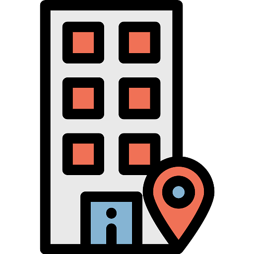
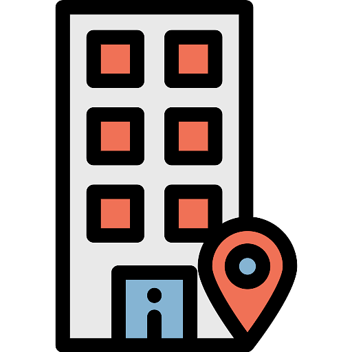

MISIÓN
En nuestra empresa, nos dedicamos a ofrecer a nuestros clientes una experiencia
única en moda urbana, donde la autenticidad y la expresión personal se fusionan.
Nos comprometemos a proporcionar prendas de alta calidad que reflejen las
últimas tendencias y el estilo de vida urbano contemporáneo. Nuestro objetivo es
ser más que una marca de ropa; aspiramos a ser un símbolo de identidad para
aquellos que buscan destacarse en la multitud y expresar su
individualidad a través de la moda. Nos esforzamos por construir relaciones
sólidas con nuestros clientes, ofreciendo un servicio excepcional y siendo parte
activa de las comunidades urbanas a las que servimos. En resumen, nuestra misión es
inspirar confianza, promover la diversidad y fomentar la creatividad a través de la moda urbana.
VISIÓN
Nuestra visión es convertirnos en el referente global en moda urbana, siendo reconocidos por
nuestra innovación, calidad y compromiso con la autenticidad. Visualizamos un futuro donde nuestra marca
inspire a las personas de todas las edades y culturas a expresar su individualidad sin límites
a través de la moda urbana. Buscamos expandir nuestra presencia a nivel internacional,
llegando a nuevos mercados y comunidades urbanas, manteniendo siempre nuestra esencia y
valores fundamentales. Nos esforzamos por ser líderes en sostenibilidad, promoviendo prácticas éticas
en toda nuestra cadena de suministro y contribuyendo positivamente al bienestar del planeta y las personas.
En última instancia, aspiramos a crear un movimiento global donde la moda urbana no solo sea un estilo de vestir,
sino una forma de vida que celebra la diversidad, la creatividad y la autenticidad.